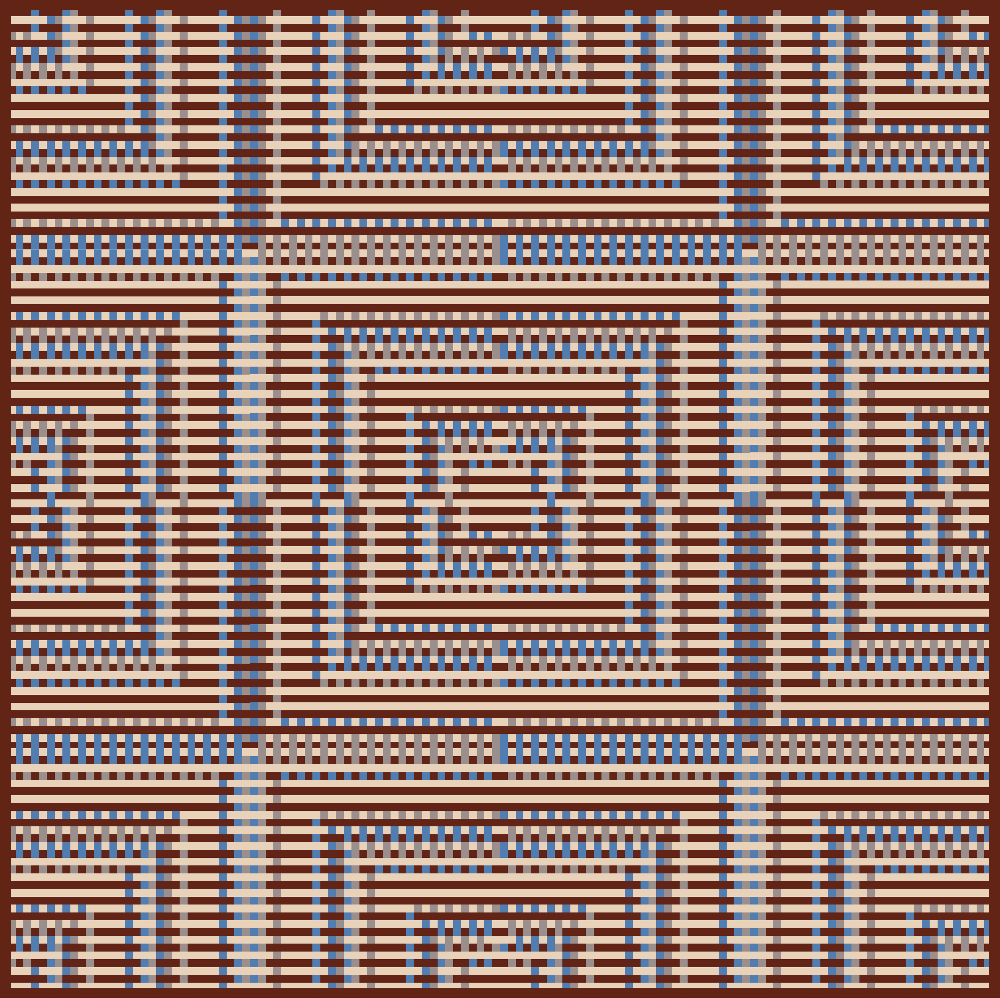
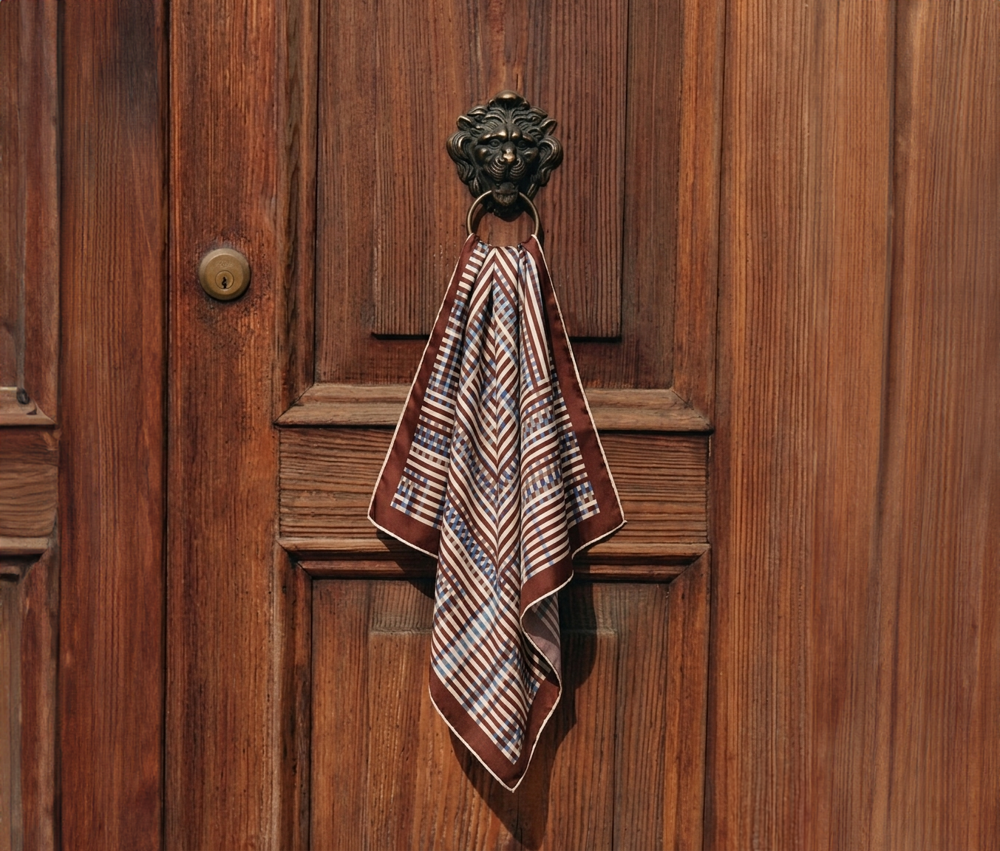
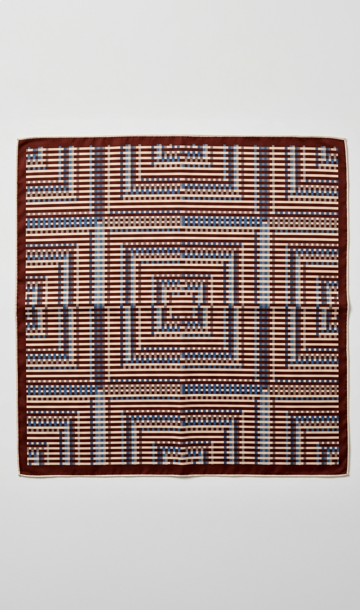
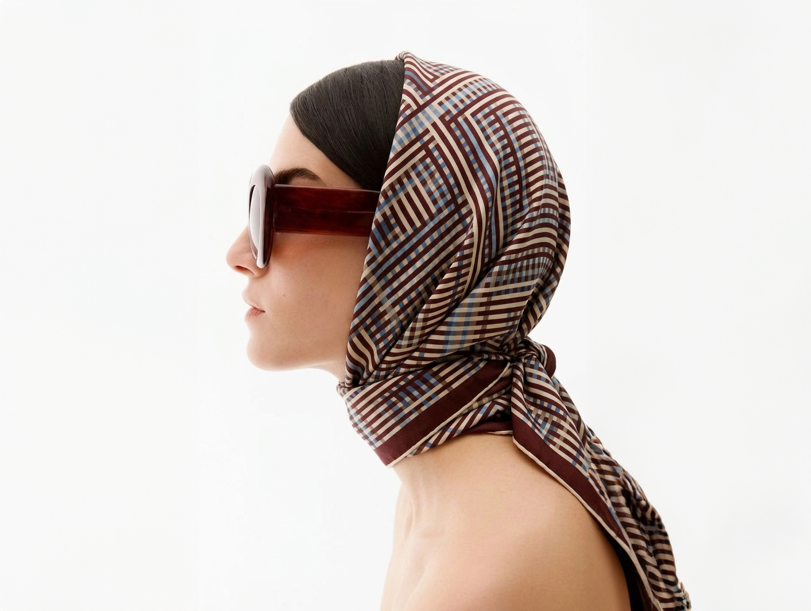

Not all clothing gets discarded. Some of it stays: passed down through families, kept for decades, repaired rather than replaced. This piece is about those garments, and the relationships people form with them over time.
Research into long-term wearer–clothing relationships found that 85% of people reported satisfaction with the garments they had kept for years, through damage, repair, and visible wear. The reasons were rarely practical. Emotional value accounted for nearly a quarter of all longevity factors: memory, inheritance, belonging, love.
These are not fashion objects. They are something older and more durable than fashion. Garments that accumulated meaning precisely because they were not replaced.
Where the other artworks in this series map acceleration, fragmentation, and excess, this one maps the opposite: continuity, attachment, and the slow logic of things that are made to last and kept because they matter.


